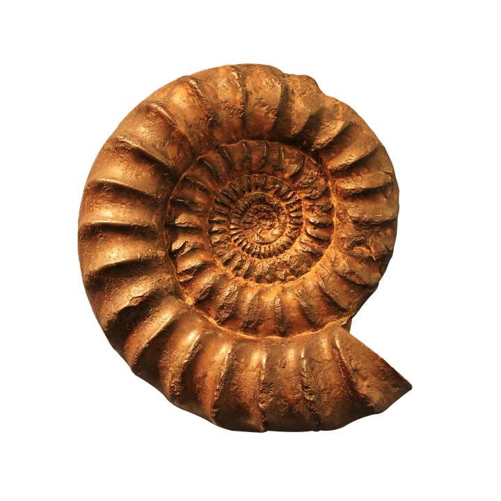

This Project is my Drawing Digital portfolio, which consists of Art from my 9th grade year. This portfolio was finished on 6/4/2025, and was worked on alongside this website!!

I'm naming this the "Distance" project. I plan on running throughout the summer through orgz., like VCTC, to improve my track/XC athletic times. My name is "Alistair Dickman" on Strava! Follow Me!
This isn't necessarily a fully finished project, but is instead a collage of contributions. I plan on working on the TheFossilForum under the name TheropodGuy.